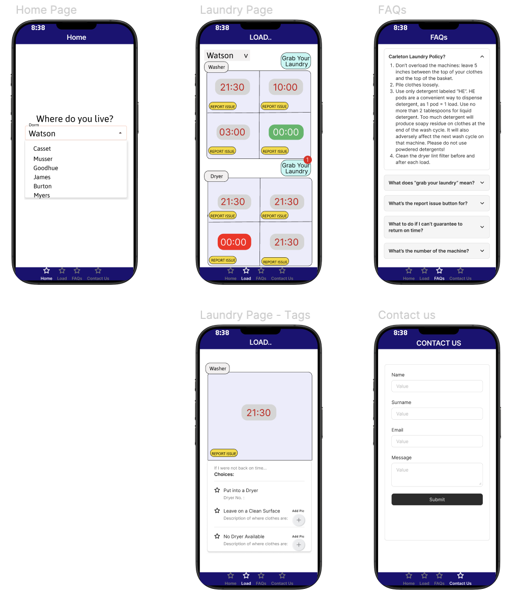
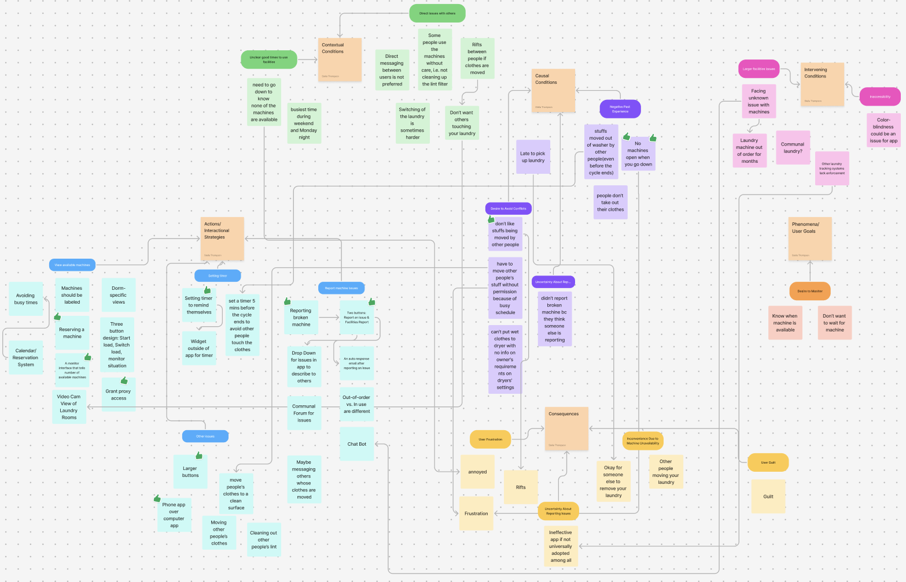

Hi! I'm Eva (Yishu) Cao, a senior at Carleton College majoring in Statistics and Computer Science. Alongside my academic pursuits, I have gained hands-on experience through internships at DKT International and Century Securities, developing data-driven insights with tools like Python, R, and Power BI. I have also led projects on spatial analysis on wildfire vulnerability and application development for sustainability with UCC, blending data science and visualization to tackle real-world issues. Beyond academics, I am an active member of KRUSH, where I teach choreography and organize performances. I am passionate about using data to make a meaningful impact and love exploring new ways to grow and learn.
I am currently seeking internships or job opportunities in data science, analytics, or software development, particularly roles that allow me to leverage my skills in Python, R, and Power BI to solve complex problems and drive meaningful insights. I am excited about opportunities where I can contribute to impactful projects and continue to develop my technical and analytical skills.
phone
507-581-3559
email
caoy2@carleton.edu
Linkedin
www.linkedin.com/in/eva-cao
education
2025 - 2027
master of data science
TBD
US
Currently applying for master degree of Data Science in the US
2021 - 2025
bachelor of Statistics, Computer Science
Carleton College
Northfield, MN, US
Completed comprehensive coursework in Statistics and Computer Science, including Probability, Regression Analysis, Spatial Statistics, Data Structures, Algorithms, and Data Visualization. Actively participated in research projects and internships, applying data analysis and programming skills to solve real-world problems
experience
2025 January - Present
Student Teaching Assistant
Carleton College
MN, US
• Provide additional explanations or tutoring to students as needed. • Hold regular study sessions to answer student questions, provide guidance, and offer additional help on course material.
2024 December - Present
Knowledge Management and Data Analytics Intern
DKT International
Washington, DC, US
• Extracted and cleaned 10k historical sales records, analyzed fundraising trends, and developed interactive Power BI dashboards with dynamic visualizations, presenting key performance metrics to senior leadership. • Contributed to knowledge management by organizing internal data sets, establishing database links, and proposing innovative methods to communicate DKT's impact, offering actionable recommendations to improve organizational strategies. • Assisted with multi-country grant management by tracking and analyzing donor behavior, and enhancing database functionality
2024 December - Present
Knowledge Management and Data Analytics Intern
2024 August - 2024 October
Fixed Income & Risk Management Intern
Century Securities Co., Ltd
Shenzhen, CN
• Extracted and cleaned 1M historical stock price data from internal trading systems and third-party vendors using Excel and Python, ensuring data accuracy and streamlining downstream processes for model development and analysis • Developed stock price forecasting models using Monte Carlo simulations for long-term price range estimation, delivering actionable insights that optimized investment strategies and enhanced decision-making • Implemented a Python-based Value at Risk (VaR) model to assess equity portfolios, performing individual stock and portfolio- wide VaR calculations to ensure compliance with company risk limits and enhance market risk management • Conducted stress testing in Excel to evaluate market, credit, and liquidity risks under a severe market crash scenario, assessing the company's risk-bearing capacity and aiding in the development of strategic risk mitigation measures • Performed due diligence for primary market issuance by organizing documentation and analyzing guarantor equity structures, operations, and financial statements for 5 clients, supporting informed investment decisions and securing regulatory approvals
2024 July - 2024 August
Market Data Analyst Intern
Western Securities Co., Ltd
Xi'an, CN
• Analyzed over 500k A-share market data and utilized linear regression and random forest models to forecast market trends and sector performance, delivering insights on investment opportunities and risk alerts in industries • Leveraged Power BI to create dashboards for conducting in-depth market analysis, designing tailored dashboards that effectively communicated market trends and investment opportunities for 4 clients based on their specific interests • Gained proficiency in financial data systems and tools to enhance client communication and service management
2024 July - 2024 August
Market Data Analyst Intern
2023 July - 2023 August
Student Teaching Assistant
Philo Academy
Xi'an, CN
• Provide additional explanations or tutoring to students as needed. • Help manage classroom dynamics, ensuring a productive and respectful learning environment.
Team Members: Clark Glymph, Eva Cao, Harry Zen, Stella Thompson
Problem Description
Laundry management at Carleton is often frustrating and inefficient. Students struggle to find available machines, set timers to retrieve their laundry, and frequently face delays in securing a dryer. Clothes are sometimes removed by others without care, leading to cluttered and disorganized laundry rooms, especially by the end of the term.
We propose a campus-wide laundry tracking system to improve efficiency, reduce chaos, and enhance the experience for both students and maintenance staff.
How the Prototype Addresses User Needs

Home Page with Location Selection: Allows users to select their dorm, providing personalized and relevant information for accessing specific laundry facilities.
Real-Time Machine Monitoring: Displays washers and dryers with time remaining, addressing the need for users to check machine availability without physically visiting the laundry room.
Issue Reporting Feature: Includes a "Report Issue" button, enabling quick and easy reporting of broken machines, enhancing maintenance response and reducing inconvenience.
Laundry Notifications: Offers a "Grab Your Laundry" notification button, reminding users when their cycle ends to prevent people forgetting to set a timer for their laundry and reduce conflicts.
Laundry Management Options: When selecting a specific machine, users can choose to put clothes into the dryer, leave them on a surface, or indicate no dryer is available, with an option to add a picture. This feature provides flexibility in handling unattended laundry, catering to different user preferences and promoting considerate behavior.
Educational Resources: An FAQs page educates users on general laundry policies, app usage, and best practices, fostering responsible and respectful use of shared facilities.
Our team conducted two semi-structured interviews and three fictional inquiry sessions to explore user needs and frustrations regarding Carleton's dorm laundry system.
Semi-Structured Interviews
The target user group is Carleton students living in dorms. The interviews focused on:
Personal experiences with the laundry system,
Common frustrations (e.g., unavailable machines, laundry being moved), and
Desired improvements and app features (e.g., machine status tracking, notifications)
Fictional Inquiry
To gain deeper insights, we engaged students in fictional scenarios involving an ideal laundry management app. Participants responded to prompts about features like machine availability tracking, alert systems, and respectful laundry etiquette.
Key Takeaways & Design Impact
Timing issues: Students struggle with remembering when to pick up laundry. A notification system could help.
Machine availability: Participants strongly supported a live tracking system.
Respect & communication: Features like “I moved your laundry” messages were suggested to reduce conflict.
These insights directly shaped our proposed laundry tracking system, prioritizing ease of use, clear communication, and real-time machine status updates.
UX Research Analysis
Our team utilized axial coding and affinity diagramming to analyze qualitative data from semi-structured interviews and fictional inquiry sessions.
Affinity Diagramming
We independently coded stakeholder transcripts to tag them under key themes—phenomena, conditions, actions/interaction strategies, and consequences. Using FigJam, we transferred our tentative codes onto sticky notes and collaboratively grouped them based on similarity.

Codebook Development
We refined these categories into clearly labeled descriptors, forming the foundation of our codebook. A shared spreadsheet was created to define each code, assign participant IDs, and document representative quotes.
Consensus & Insights
After independently coding transcripts using the agreed-upon codes, we compared results, resolving discrepancies through a consensus-building process. By tallying the number of participants associated with each code, we identified key insights to inform design requirements for an improved dorm laundry system.
This structured approach enabled us to uncover user pain points and develop meaningful, user-centered design solutions.
Final Three Requirements
View Available Machines
Description: Users should be able to see which laundry machines are currently in-use and which are available. Prototype Feature: A real-time machine monitoring system that displays the availability of washers and dryers in the app. Rationale: Reduces stress in laundry rooms by providing users with the information they need to plan their laundry times efficiently. Priority: All participants emphasized the need for this feature, as it helps them decide when to do laundry.
Keeping Track of Laundry
Description: Users should be able to set a timer within the app that alerts them when their laundry is done. Prototype Feature: An easy-to-use timer feature on the home screen that notifies users when their laundry is finished, without needing to open a separate app. Rationale: Allows users to track their laundry within the app and alerts them when their laundry is done, which helps with time management and prevents machine conflicts. Priority: All participants mentioned the importance of a timer to ensure they don't forget their laundry.
Avoiding Conflicts
Description: Users should be able to specify how they want their laundry handled when they're not around, such as moving it to the dryer or leaving it on a clean surface, and communicate these preferences to others. Prototype Feature: Options within the app to set laundry handling preferences and message other users. Rationale: Reduces conflicts and frustration in shared spaces by ensuring users' preferences are respected and efficient use of machines is promoted. Priority: All participants mentioned this feature, highlighting the need for communication in shared laundry spaces.
How the Prototype Addresses User Needs
The prototype addresses the final 3 requirements by implementing 3 different features for users. The machine availability feature allows users to check washer and dryer statuses in real-time, with a color-coded system making it easy to identify open machines. To help users keep track of their laundry, a customizable timer system notifies them when their load is done, reducing the chances of forgotten clothes. Lastly, to minimize conflicts in shared laundry spaces, the prototype includes a structured communication system where users can set laundry handling preferences, receive messages, and choose how their clothes should be managed if left unattended.
Upon opening the app, users are directed to the homepage.
A drop-down menu allows users to select their dorm and check machine availability.
After selecting a dorm and clicking the "View Availability" button, they are taken to the Loads page, where washers and dryers' availability is displayed.
Each machine shows its remaining time. If a machine is available (time remaining = 0), its time box turns green for easy identification.
2. Keeping Track of Laundry
Users can click the timer button on an available machine to set a timer.
The timer allows customization of duration and intervals, with options to pause or cancel.
While the timer runs in the background, a red notification appears on the timer button.
The notification remains visible until the user manually cancels it, ensuring they don't forget about their laundry.
3. Avoiding Conflicts
Before using a machine, users must set their laundry handling preferences and provide contact details.
Anyone can click on a machine to check its status and interact.
If the laundry owner does not return on time, others have four options:
Call or message the owner (phone numbers are user-inputted, and messages redirect to a chat window).
If no response, follow the owner's preset preferences:
Move clothes to a dryer (option to record the dryer number).
If no dryers are available, place clothes on a clean surface (option to upload a photo or description of the location).
UX Evaluation Tasks
Check Machine Availability
Task: Check machine availability in a residence hall. Objective: Ensure users can quickly determine which laundry machines are in use or available. Evaluation Metric: Time taken to check availability, user confidence in data accuracy, and overall ease of use.
Set a Laundry Timer
Task: Set a timer for laundry completion. Objective: Allow users to efficiently track their laundry without relying on external apps. Evaluation Metric: Success rate in setting a timer, ease of finding the feature, and user satisfaction.
Communicate Laundry Preferences
Task: Communicate preferences regarding laundry handling when unable to pick it up on time. Objective: Facilitate better communication in shared laundry spaces to reduce conflicts. Evaluation Metric: Ability to set and view preferences, clarity of options, and overall user acceptance.
UX Evaluation Process and Focus Groups
The UX evaluation was conducted using focus groups, involving three users performing a series of tasks designed to assess the usability of the prototype.We directly observed user interactions and recorded screens to measure the time taken for each task and the number of errors encountered. This provided quantitative insights into usability and efficiency. After completing each task, users provided qualitative feedback, rating their experience and suggesting improvements. These insights were used to refine the interface and enhance the overall functionality. From the evaluation, we identified key pain points and areas of improvement, ensuring that the final design aligns with user needs and expectations.
Results from UX Evaluation of Prototype
What Worked Well
Task 1: Users found it easy to check the availability of machines, with all participants rating this task positively.
Task 2: The timer function was generally clear but could benefit from better guidance and simplification.
Task 3: The communication features were appreciated for their innovation, though there were usability issues related to interface clarity.
What Didn't Work as Well
Task 2: The timer interface caused confusion due to inconsistent time displays and an overwhelming number of time-related elements.
Task 3: The communication page's interface was unclear, with users struggling to identify interactive elements and the distinction between sections.
Anonymized User Quotes
User 1: "It would be easier if I could switch residence halls directly from the Load page."
User 2: "The timer interface needs more intuitive labels like using ‘snooze' instead of ‘time interval'."
User 3: "I couldn't tell if the center of the machine was clickable; the layout could be clearer."